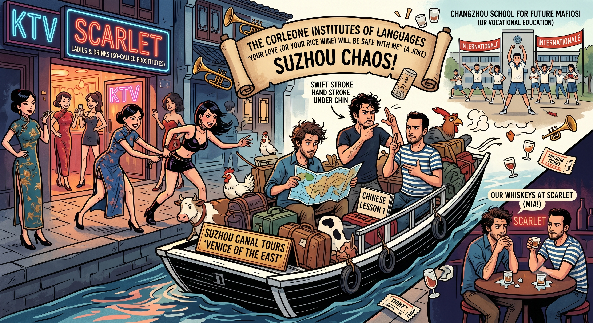

Your Love Will Be Safe With Me: Reflections on Suzhou
Alright, the title has absolutely nothing to do with what you are about to read. Instead, I am going to talk about Suzhou—and perhaps a bit of sheer randomness, simply because I can.
Last week, we all decided to head to Suzhou, a place often dubbed the "Venice of the East." It is renowned for its winding canals, its local food, and its classical gardens—all of which are undeniably beautiful. It's also known for its red-light districts, though officially, those don’t exist. So... shhhhhhh.

The trip began late on a Thursday afternoon following a string of deeply frustrating language classes—the kind where I am continually reminded that my Chinese is simply not up to snuff. To be quite honest, if I were putting in four-plus hours of intense practice every single night, it would be. Sadly, there are only so many hours in a day, and only so many I am willing to surrender to homework.
Instead, let me tell you about the hypothetical Corleone Institutes for people of every origin, race, color, and belief. The Corleone Institute of Languages proudly presents courses in Business English and everyday conversational English. Both tracks provide you with the essential skills required to establish your own mafia organization, alongside practical strategies to prepare for a life of high-speed chases, intricate plots, betrayal, and, above all, fun.
The Corleone School of Business English offers study aids such as one-on-one tutoring with genuine Sicilian mafiosi, who will be more than glad to break a bone or two for educational clarity. Instructors are strictly advised to utilize hand gestures as much as possible. These include a swift stroke under the chin while moving your hand forward with a disgusted grin—roughly translating to, "I don't give a damn." Alternatively, you can shape your hands like pistols and gyrate them clockwise and counterclockwise; this signifies that you are absolutely not getting what you asked for, especially when demanding money from parents or requesting the keys to an exotic mafioso boss's car. Perfect these, and you should do quite well in Italian business. This is all, of course, a joke.
Over the weekend, I hung out with Giorgio (a self-described "ex-junky-drunkey-monkey"), Marco (an Italian teacher and explorer), Luciano (an Austrian follower of self-help books), and myself. Because I spent a significant amount of time with Giorgio and Marco, they taught me how to properly curse in Italian, how to confidently order pizza and pasta, and how to drink precisely like the locals in Venice do: standing right by the edge of a canal on some long-lost bridge, enveloped in total silence except for the loud, roaring rhythm of Italian conversation. We joked endlessly about the Corleone Business School layout, because the mafia is always a savory topic when you're drinking with Italians.
Our journey actually kicked off with a train ride to the small city of Changzhou, where Marco teaches. When I casually asked for rice wine at ten in the morning, I was immediately offered a free glass of exceptionally potent rice firewater instead. Marco's school felt a bit like a military compound; the lights flickered on strictly at 6:00 AM and were cut entirely by 9:30 PM. It was a fascinating, stark environment. Because it’s a vocational high school where students go if they choose not to pursue traditional academics, the structure is incredibly rigid.
The kids are roused at 6:00 AM sharp by recorded bells and trumpets blaring through loudspeakers. From that moment on, the day's news is read aloud to them. At 6:30 AM, accompanied by recorded fanfares of trumpets and drums, the entire student body is marched out into the main plaza—rain or shine—to execute mandatory exercise routines for half an hour. Only then are they led to breakfast and subsequent classes, which run straight through until 6:30 PM. They get a brief half-hour block of rest, followed by even more evening classes. At noon, the children undergo a second round of rigorous group exercises, except this time, the background music is heavily inspired by "The Internationale." Standing there watching it, I half-expected the historical theater of a mid-century army to march around the corner, but of course, it was just teenagers.
By Friday night, we decided to explore the nightlife in Suzhou. We quickly encountered an array of dimly lit bars. As we walked down the street, three or four girls would suddenly burst out into the open and chase us a ways up the sidewalk, trying to pull us inside. It had the completely opposite effect on us—we ended up running quite a bit that night just to escape them.
We eventually ended up at a dreadful place called Scarlet, which is a massive nightclub chain over here. The hosts offered us a prominent table and we stood around it, despite having absolutely no money to order an expensive bottle of alcohol—much to the visible dismay of the management. When we finally ordered single drinks, Luciano and I stuck to bottled beers. For Giorgio and Marco, the outlook was much bleaker: they ordered whiskeys and were handed what looked like two empty glasses with a splash of water at the bottom. We aren't talking half-empty; we're talking glasses that looked as if they had contained ice cubes an hour ago that had since completely evaporated. When they went back to the bartender to demand actual ice, they were met with a completely blank, quizzical stare.
To balance things out, we later headed to a venue called the "Tibetan Bar," fully expecting to hear the beautiful, traditional harmonies of Tibetan voices and see vibrant, colorful attire. Marco had visited before and swore he heard the most incredible acoustic music there. Naturally, when we arrived, all that remained of that atmosphere was the beautiful Tibetan wall decorations. The live music itself was pure chaos: a trio belts out contemporary Chinese pop songs, and to top it all off, they launched into an extensive set of classic American Country music dedicated entirely to us, simply because we were the only Westerners in the building. Not just one song—an entire album's worth.
We spent the rest of our time exploring Suzhou’s stunning classical gardens. I had originally intended to head back on Saturday, but I ended up missing my train because I looked at the local transit options and decided that traveling alongside chickens and cows while standing upright for four straight hours just isn't quite my style.